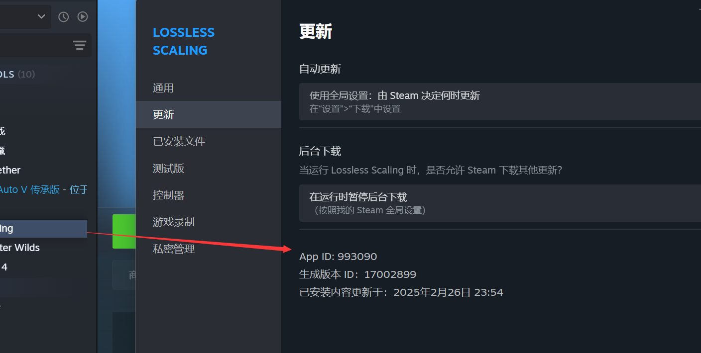

What is a Steam AppID?
An AppID identifies a Steam app. A SteamID identifies a user.
Definition
A Steam AppID is the number Steam assigns to each app: games, tools, demos, soundtracks, and more. In a store URL such as store.steampowered.com/app/730, the number is the AppID. 480 belongs to SpaceWar, which is why people say 480 online.
It is not a SteamID. SteamID identifies an account; AppID identifies the app. Manifests, launch options, CDK exchange, and SteamDB pages all key off AppIDs. LuckyGameTools can look up an AppID by game name on the library page.
How to find an AppID
993090. The Build ID on the same screen is not the AppID.

/app/ in the URL is the AppID, for example store.steampowered.com/app/993090/.Term mapping
AppID
Application number, e.g. 480 = SpaceWar
SteamID
Account identifier; use the SteamID tools instead
Manifest / import
Usually mapped by AppID when adding a game to the library
How it shows up in LuckyGameTools
- The game-update table lists AppIDs so you can check SteamDB and manifests.
- Name search helps when you remember the title but not the number.
- Numbers in Denuvo or 480 discussions are usually AppIDs.
AppIDs are public Steam identifiers. Do not paste account tokens, CDKs, or mystery codes into search boxes or public pages.
Common misconceptions
How is an AppID different from a SteamID?
AppID points at an app. SteamID points at a user. They are not interchangeable.
Why is 480 mentioned so often?
Because 480 is SpaceWar. Chinese '480 online' talk is about that AppID.
Where can I look up an AppID?
In Steam, open Properties → Updates and read App ID at the bottom, or take the number after /app/ in the store URL. You can also search by name on this site.